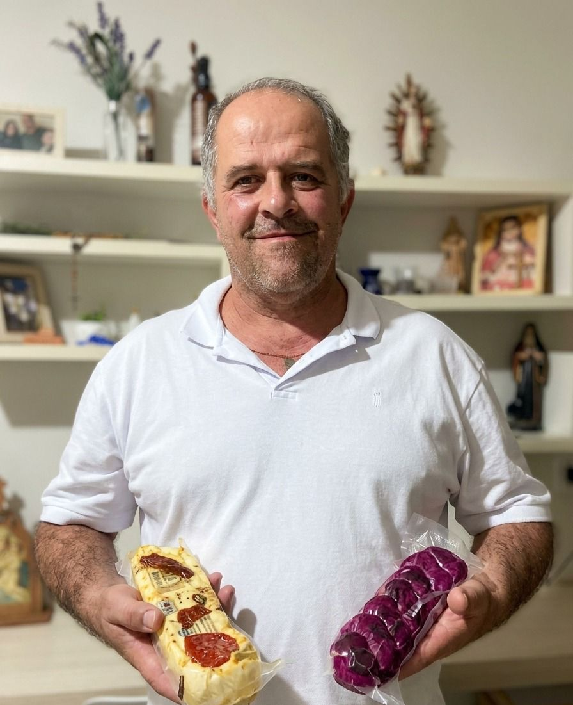

Casa do Queijo
O melhor distribuidor de queijo do Sul de Minas
Nossa História

A Casa do Queijo nasceu da paixão de uma família mineira pelo queijo artesanal. Localizada em Coqueiral/MG, no coração do Sul de Minas, surgimos com um propósito simples: levar o melhor queijo da região diretamente para sua mesa.
Com anos de experiência no mercado e parcerias sólidas com produtores locais, selecionamos apenas os queijos de maior qualidade — do canastra curado ao provolone especial — garantindo sabor, tradição e cuidado em cada pedaço.
Quem está por trás

Aqui você pode colocar uma apresentação pessoal — quem fundou, há quanto tempo está no negócio, a relação com os produtores parceiros e o amor pelo queijo artesanal do Sul de Minas.
Por que nos escolher?
- Produtos diretamente de produtores artesanais do Sul de Minas
- Seleção rigorosa de qualidade em cada lote
- Atendimento personalizado pelo WhatsApp
- Entrega para toda a região
- Variedade completa: curados, temperados, frescos e doces
Vamos conversar?
Ficou com alguma dúvida, quer fazer um pedido especial ou conhecer mais produtos? Entre em contato — respondemos rápido!
Fale Conosco